Return to Assignment 3 Overview
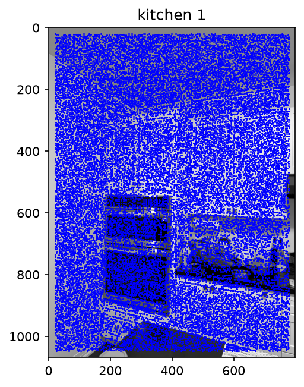
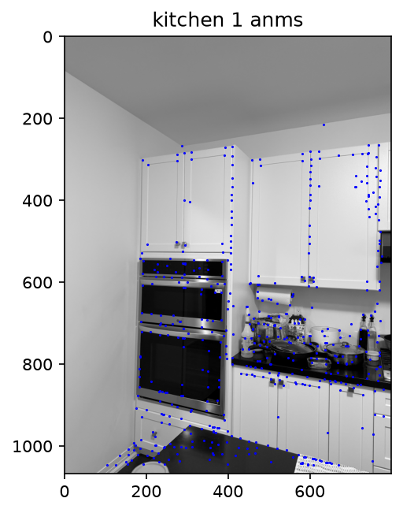
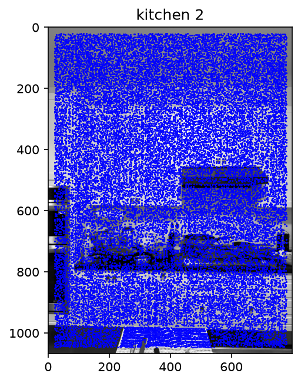
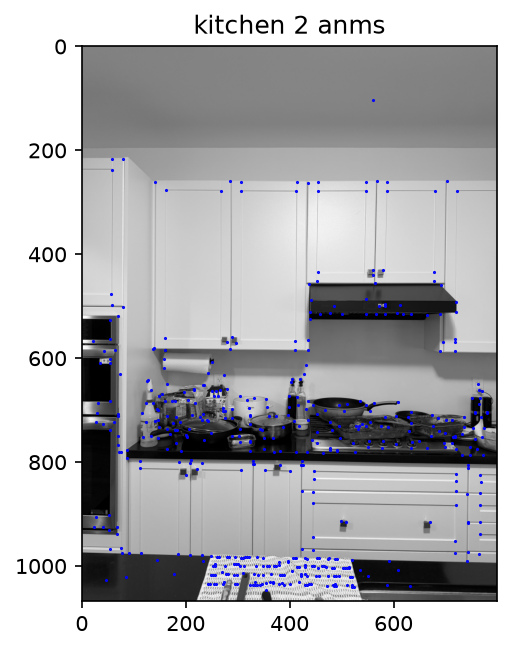
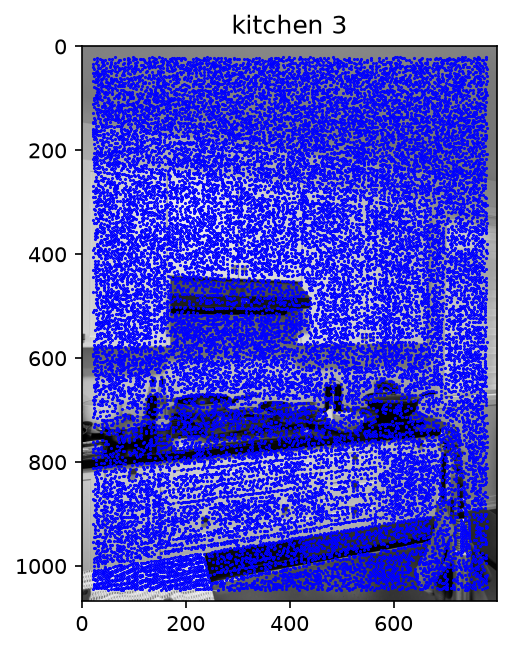
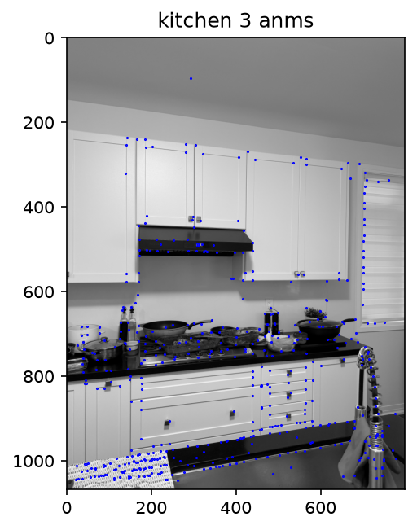
Without ANMS, the Harris detector keeps every local maximum, so all three kitchen photos are almost completely covered in corners, including the plain ceiling and the empty wall on the left of kitchen1, where there isn't anything worth matching. After keeping the 2500 strongest and running ANMS down to 500, the corners move onto the parts of the kitchen with real structure like the corners of the white cabinet doors, the door handles, the oven frame in kitchen1, the exhaust in kitchen2 and kitchen3, and the pans/bottles on the counter. The ceiling is left almost empty (only one corner in each photo), and the corners are spread across the whole kitchen instead of piling up on the busy countertop. The patterned towel at the bottom of kitchen2 and kitchen3 still gets a tight cluster, since its pattern has many strong corners close together, and in kitchen3 the edge of the window blinds and the coils of the faucet also keep a line of corners.
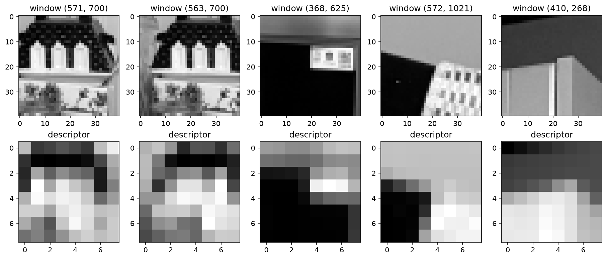
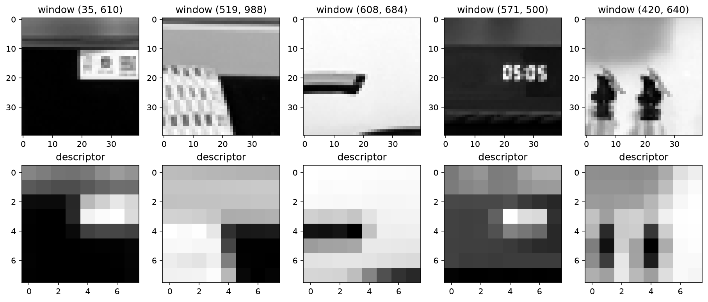
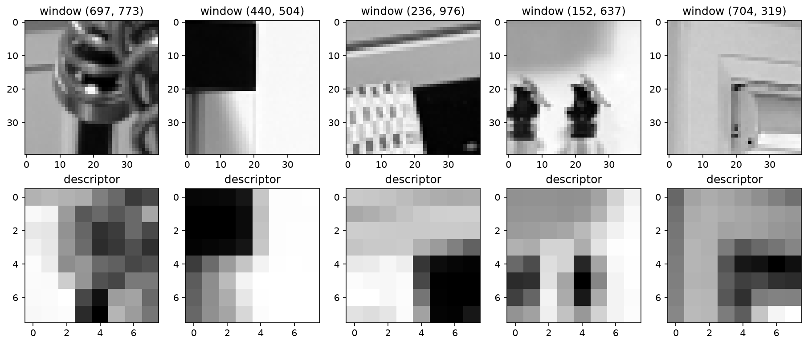
Each 8x8 descriptor keeps the rough layout of its 40x40 window while the fine detail is blurred away. For example, in kitchen2 the window at (571, 500) is the clock on the exhaust showing 05:05, and its descriptor keeps only a bright block on a dark background, with the numbers blurred out. The same label on the side of the upper oven shows up in kitchen1 at (368, 625) and in kitchen2 at (35, 610), and both descriptors have the same bright block in the upper right over a dark area, which is what lets the two be matched in B.3. The first two windows in kitchen1, at (571, 700) and (563, 700), are only 8 pixels apart on the same item on the counter, so they produce almost the same descriptor.
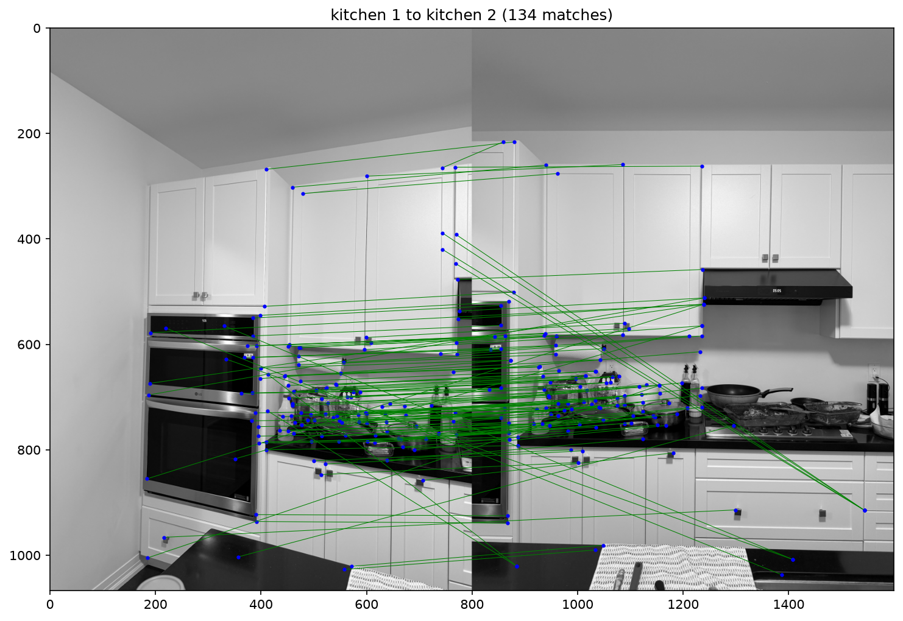
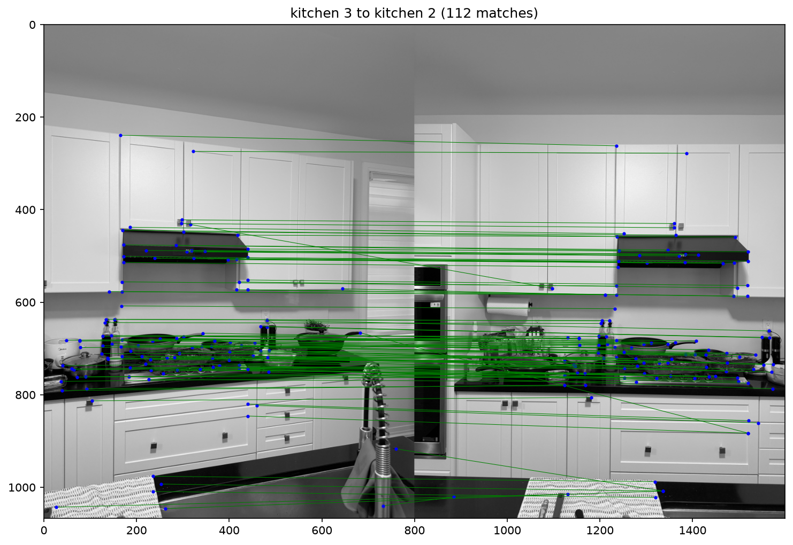
With a ratio threshold of 0.5, kitchen1 to kitchen2 kept 134 matches and kitchen3 to kitchen2 kept 112. Most of the matches are on the items on the countertop like the pans, bottles, and dishes, since each of those looks different from everything else in the kitchen. The kitchen3 to kitchen2 matches are mostly parallel, close to horizontal lines, which fits the camera turning between two shots of the same wall. The kitchen1 to kitchen2 matches are messier because kitchen1 looks at the corner of the room at an angle. A group of lines starts at the edges of the upper cabinets in kitchen1 and runs down to a drawer at the bottom right of kitchen2. These matches are wrong and are caused by the white cabinet doors and drawers all looking similar. Kitchen3 to kitchen2 has a few of the same kinds of mistakes, with lines from the upper cabinets running down to the drawers.
As seen in B4.py file submitted to Learn dropbox:
def ransac(points1, points2):
iterations = 1000
threshold = 3
best_inliers = np.zeros(len(points1), dtype=bool)
for _ in range(iterations):
# homography from 4 random matches
sample = np.random.choice(len(points1), 4, replace=False)
H, _, _ = computeH(np.take(points1, sample, axis=0), np.take(points2, sample, axis=0))
# inliers are matches that land within threshold pixels of their partner
projected = transform(points1, H)
errors = np.linalg.norm(projected - points2, axis=1)
inliers = errors < threshold
# keeping homography with the most inliers
if inliers.sum() > best_inliers.sum():
best_inliers = inliers
# final homography from all inliers with least squares
H, _, _ = computeH(points1[best_inliers], points2[best_inliers])
return H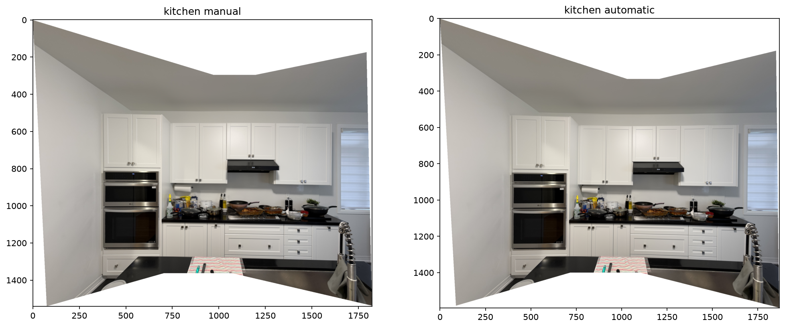
Both mosaics use kitchen2 as the reference, with kitchen1 warped onto the left and kitchen3 onto the right, using the same feathering from A.4. The manual mosaic uses homographies from 8 clicked points per pair, while the automatic mosaic uses the RANSAC homographies, which are fit to every inlier out of the 134 and 112 matches from B.3. At this size the two mosaics look almost the same. In both, the upper cabinets, exhaust, ovens, and countertop line up across all three photos with no doubled edges. However, the main difference is the shape of the canvas. The manual mosaic is about 1820 x 1545 pixels and the automatic one is about 1865 x 1585. The two sets of homographies are slightly different, and that difference grows the farther a point is from kitchen2, so it shows up most at the outer edges (along the left wall of kitchen1 and the faucet side of kitchen3).